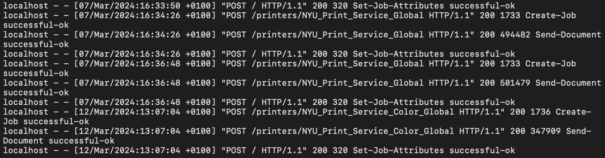

This is my third summer project and it is a log analysis tool.
This is my third summer project and it is a log analysis tool.
To be completely honest, I was not sure what a log analysis tool even does until I did some more research.
It is simply a tool that helps organisations and individuals to make sense of the large amount of data created by their systems, apps, and networks.
Here are a few functions of log analysis tools:
So far, I am planning to use pandas for data collection and matplot for presenting the data but this may change.
After my research, I wanted to test out a particular log on my device and go forth.
I am going to use my access log, and I want to first use the last 10 logs and analyse them and then progress to doing real-time analysis.
I then want to progress and have the code be used by any device and any log. My first prototype will focus on my personal access log and non-real-time.
The following is a screenshot of the last 10 logs of my access log from my device. As we can see, we have a solid structure on what the data consists. 
host - date/time - method - url- status - size - message - details
log_pattern = re.compile(r'(?P<host>[^\s]+) - - \[(?P<datetime>[^\]]+)\] "(?P<method>\w+) (?P<url>[^\s]+) HTTP/[^\"]+" (?P<status>\d+) (?P<size>\d+) (?P<message>[^\s]+) (?P<detail>[^\s]+)')
# Process and print parsed log entries
def process_log_lines(lines):
entries = []
for line in lines:
parsed_entry = parse_log_line(line)
if parsed_entry:
print(f"Parsed Entry: {parsed_entry}")
entries.append(parsed_entry)
else:
print(f"Failed to parse line: {line.strip()}")
return entries
# OUPUT
# Read 10 lines from log file.
# Line: localhost - - [07/Mar/2024:16:33:50 +0100] "POST / HTTP/1.1" 200 320 Set-Job-Attributes successful-ok
# Parsed Entry: {'host': 'localhost', 'datetime': '07/Mar/2024:16:33:50 +0100', 'method': 'POST', 'url': '/', 'status': '200', 'size': '320', 'message': 'Set-Job-Attributes', 'detail': 'successful-ok'}
# Create a DataFrame from the parsed entries
log_df = pd.DataFrame(parsed_entries)
# Convert columns to appropriate data types
log_df['datetime'] = pd.to_datetime(log_df['datetime'], format='%d/%b/%Y:%H:%M:%S %z', errors='coerce')
log_df['status'] = log_df['status'].astype(int)
log_df['size'] = log_df['size'].astype(int)
import pandas as pd
import re
import matplotlib.pyplot as plt
# Path to the access log file on your MacBook
log_file_path = '/private/var/log/cups/access_log' # Update to the correct path if needed
# Function to parse log lines
def parse_log_line(line):
log_pattern = re.compile(
r'(?P<host>[^\s]+) - - \[(?P<datetime>[^\]]+)\] "(?P<method>\w+) (?P<url>[^\s]+) HTTP/[^\"]+" (?P<status>\d+) (?P<size>\d+) (?P<message>[^\s]+) (?P<detail>[^\s]+)'
)
match = log_pattern.match(line)
if match:
return match.groupdict()
return None
# Read the last 10 lines from the log file
def read_last_10_lines():
try:
with open(log_file_path, 'r') as file:
new_lines = file.readlines()[-10:]
# print(f"Read {len(new_lines)} lines from log file.")
return new_lines
except Exception as e:
print(f"Error reading log file: {e}")
return []
# Process and print parsed log entries
def process_log_lines(lines):
entries = []
for line in lines:
parsed_entry = parse_log_line(line)
if parsed_entry:
print(f"Parsed Entry: {parsed_entry}")
entries.append(parsed_entry)
else:
print(f"Failed to parse line: {line.strip()}")
return entries
# Read and process the last 10 lines
lines = read_last_10_lines()
parsed_entries = process_log_lines(lines)
# Create a DataFrame from the parsed entries
log_df = pd.DataFrame(parsed_entries)
# Convert columns to appropriate data types
log_df['datetime'] = pd.to_datetime(log_df['datetime'], format='%d/%b/%Y:%H:%M:%S %z', errors='coerce')
log_df['status'] = log_df['status'].astype(int)
log_df['size'] = log_df['size'].astype(int)
# Example analysis and visualization
# Count of HTTP methods
http_method_counts = log_df['method'].value_counts()
print("HTTP Method Counts:\n", http_method_counts)
http_method_counts.plot(kind='bar', title='HTTP Method Counts')
plt.xlabel('HTTP Method')
plt.ylabel('Count')
plt.show()
# Status code distribution
status_code_counts = log_df['status'].value_counts()
print("\nStatus Code Counts:\n", status_code_counts)
status_code_counts.plot(kind='bar', title='Status Code Counts')
plt.xlabel('Status Code')
plt.ylabel('Count')
plt.show()
# Data transferred per URL
data_transferred_per_url = log_df.groupby('url')['size'].sum()
print("\nData Transferred Per URL:\n", data_transferred_per_url)
data_transferred_per_url.plot(kind='bar', title='Data Transferred Per URL')
plt.xlabel('URL')
plt.ylabel('Data Transferred (Bytes)')
plt.show()